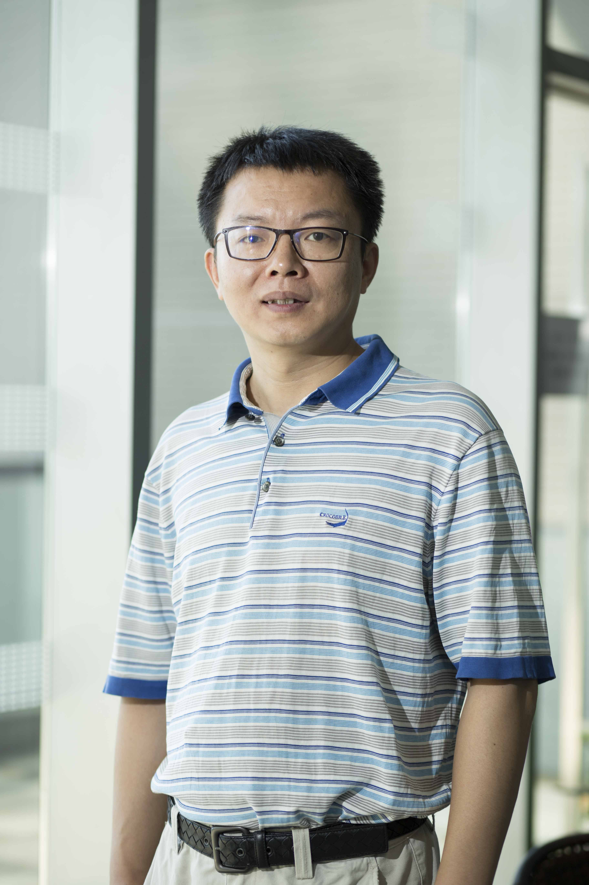

|
 |
Bin CUI 中文
Professor
School of Computer Science, Peking University
- Address: School of
Computer Science, Peking University, Beijing, China 100871
- Phone: +86 10 62765821
(Office) ; +86 10 62765822 (Fax)
- Office: 1630, Science
BLK 1
- E-mail: bin.cui AT
pku.edu.cn
|
Bin Cui is a
professor and Deputy Head in the CS department. He obtained his
B.Sc. from Xi'an
Jiaotong University (Pilot
Class) in 1996, and Ph.D. from National
University of Singapore in 2004 respectively. From 2004 to
2006, he worked as a Research Fellow in Singapore-MIT Alliance. His
research interests include database system architectures, query and
index techniques, big data management and mining. He has served in the
Technical Program Committee of various international conferences
including SIGMOD, VLDB, ICDE and KDD, and as Area Chair of ICDE 2011&2018, Demo
Co-Chair of ICDE 2014, Area Chair of VLDB 2014, PC Co-Chair of APWeb
2015, WAIM 2016 and DASFAA 2020. He is serving as Vice Chair of Techical Commettee on Database China Computer Federation (CCF) and Trustee Board Member of
VLDB Endowment, is also in the Editorial Board
of Distributed and Parallel
Databases, Journal of Computer Science and Technology, and SCIENCE CHINA Information Sciences, and was an assocaite editor of IEEE Transactions
on Knowledge and Data Engineering (TKDE) and VLDB Journal. He was awarded
Microsoft
Young Professorship award (MSRA 2008), CCF Young Scientist award
(2009), Second Prize of Natural Science Award of MOE China (2014), and
appointed as Cheung Kong distinguished Professor by MOE in 2016.
He is a senior member of IEEE, member of ACM
and distinguished member of CCF.
News： We have opening positions for Tenure-track faculties and Post-Docs. Interested persons please contact me directly.
Research Courses Publications Professional Activities Students |
Professional
Services:
Jounral Editorial Board
- Data Science and Engineering (Editor-in-Chief, 2022- )
- IEEE Transactions on Knowledge and Data Engineering
( 2009 -
2013 )
- The
VLDB Journal (2011-2017)
- Distributed and Parallel Databases
(2012- )
- Frontier of Computer Science (2013-2017)
- Science China - Information Science (2018- )
- Journal of Computer Science and Technology (2019- )
Selected Conference PC Memberships:
-
SIGMOD 2007, 2008, 2010, 2013-2016, 2018, 2020, 2023
- VLDB 2008-2010, 2012, 2013, 2014 (Area chair),
2016, 2017, 2019,2020
- ICDE 2008-2014, 2011(Area chair), 2014 (Demo Co-chair)
,2017, 2018(Area Chair), 2019, 2020(TKDE poster Chair),2021,2022
- KDD 2010, 2013-2018, 2019 (SPC), 2020, 2021(SPC), 2022(SPC)
- SIGIR, ICML, Dasfaa...
Research Grants
-
NSFC Key Program: "New Data Management System" (PI, No. 61832001) 2019-2023
-
National Key R&D program of
China: "Large Scale Machine Learning System" (No. 2018YFB1004403) 2018-2021
-
PKU-Tencent Joint Research Lab, 2017-2023
-
Shenzhen Research Foundation: "Large Scale
Graph Data Management and Analysis" (PI, JCYJ20151014093505032)
2016-2018
-
NSFC: "Key Techniques for Distributed Graph
Processing System with Multiple Execution Engines" (PI, No. 61572039 ) 2016-2019
-
Microsoft
Research Asia Collaborative Research Award, 2015
-
Tencent:
"Distributed Machine Learning Platform for Big Data Analytics" (PI),
2014-2017
-
NSFC: "The Research on Large-scale Database System Facilitating Internet
Applications" (PI, No. 61272155 ) 2013-2016
-
NSFC: "Data Management and Mining in Social
Media Systems" (PI, No. 61073019 ) 2011-2013
The State Key Program of National Natural
Science of China: "New Theory and Method for Web Search and Mining"
(CI, No. 60933004)
2010-2013
NSFC: "Index and Query Technique for Flash
Disk Based DBMS" (PI, No. 60873063 ) 2009-2011
NSFC China-Australia Special Fund for
Scientific and Technological Collaboration: "Effective and
Efficient Indexing for Real-time Video Search" (PI, No.
60811120098) 2008-2010
863: "Adaptive Query Processing on
Scientific Data Stream" (CI, 2007AA01Z15) 2007-2009
NSFC: "Efficient Similarity Search in
High-dimensional Databases" (PI, No. 60603045) 2007-2009
|
{kind=link}